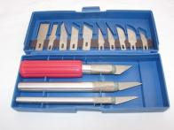
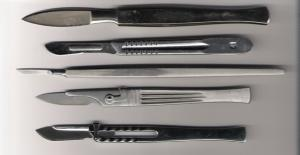
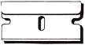
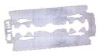

Инструменты для кровопускания
Основные меры предосторожности
Будьте осторожны, нанося раны
Каждое кровопускание должно производиться в безопасных местах, и лучше всего, если вы будете знать, где располагаются эти места. Копия «Анатомии Грея» или любой другой достойный медицинский справочник покажет вам расположение крупных артерий и других вещей, которые следует избегать. Некоторые книжные магазины позволяют просматривать книги перед покупкой, но так же вы можете найти то, что вам нужно, и вашей библиотеке. Вы так же можете использовать интернет, чтобы найти «Анатомию Грея», если вы не можете позволить себе (или не можете найти) хорошую медицинскую анатомию.
Защита донора и себя
Просто то, что вам нужно пить кровь, совсем не значит, что вы должны игнорировать возможность смертельных заболеваний. В большинстве городов есть такие бесплатные клиники, где вы можете бесплатно сдать анализы и проверить, здоровы ли вы или ваш донор.
Стерилизация / Очистка инструментов
Shortgoth написал прекрасный обзор по методам стерилизации - я настоятельно рекомендую прочитать его. Чистота и стерилизация инструментов значительно снижает риск заражения инфекциями. Также необходимо очищать и стерилизовать области, в которых будут произведены порезы, чтобы сократить риск попадания в рану донора поверхностных бактерий.
Так как любой инструмент для кровопускания может нести риск передающихся через кровь болезней, он должен утилизироваться после каждого применения (я знаю, что люди не захотят выбрасывать ножи, но бритвенные лезвия, ланцеты и другие дешёвые одноразовые вещи, безусловно, можно заменить).
Первая помощь. Обработка раны.
Можно промыть рану с мылом и водой или использовать антибактериальную салфетку. Также можно использовать антибактериальный крем (например, полиспорин или неоспорин), нанеся его на рану, наложите сверху пластырь или чистую повязку, чтобы предохранить попадание грязи или инородных предметов. Если вас беспокоит, что рана открытая, можно склеить рану изоляционной или хирургической лентой.
Если вы никогда не посещали занятия по оказанию первой помощи, сделайте это! Это уменьшит риск потенциальных неприятностей, которые могут у вас возникнуть, и даст вам понятие о том, как лучше всего заботиться о большинстве ран, которые встречаются в повседневной жизни.
Рубцы:
Большинство методов кровопускания будет происходить с большей или меньшей вероятностью образования рубцов. Вы и Ваш донор должны знать об этом, и особенно донор должен помнить о том, что шрамы у него будут постоянно – это имеет значение, например, если человек собирается носить купальники, так как большинство шрамов будут видны. Все доноры должны быть готовы к такому повороту событий.
Кроме того, наличие шрамов может повлиять на оказываемую им помощь в медицинском учреждении, если вдруг кто-то решит, что донор специально режет себя, чтобы обратить на себя внимание и добиться поддержки. Это может привести к тому, что им будет предложено пройти психиатрическую экспертизу, чтобы выявить их проблемы. Вот почему очень важно, чтобы любой из шрамов был скрыт от посторонних взглядов.
Шрамы могут быть уменьшены (или устранены, если их носитель является достаточно терпеливым для этого) благодаря высокому содержанию масла с витамином Е. Правильное витаминное масло с витамином Е - это чрезвычайно вязкая, густая как мёд субстанция от 28000 МЕ и выше. Вы можете найти их списки (среди которых есть как водянистые, так и не очень) и здесь, в интернет магазине Amazon. Их нужно применять, когда рана ещё не зажила. Область нанесения станет очень липкой, но если вы потерпите, это будет того стоить. [Рекомендую использовать мазь-бальзам "Спасатель" прим. Регент]
Выбор места
Поговорите со своим донором, чтобы узнать, в каком месте он предпочёл бы делать кровопускание и каким инструментом. Если даритель предпочитает делать порезы и уже делал их, то им легче всего будет выбрать место, которое он знают, как самое безболезненное.
В среднем, наименее болезненными местами являются внешние стороны рук, спина, лопатки, верхняя часть плеч, дальше от шеи. Если в каких-либо местах потенциально находятся эрогенные зоны, то, скорее всего, они будут слишком болезненны для использования (или именно ваш донор может почувствовать боль там, где большинство боль не чувствует).
Автоматические ланцеты, ланцеты и микролезвия (самые простые и самые безболезненные)
Я всегда рекомендую это любому, кто не уверен, какой инструмент выбрать, поскольку многие имеют относительно смутное представление об инструментах, пока не начнут использовать их (например, на крупных артериях и т.д.). Эти устройства широко используются при диабете, для акупунктуры или проверки холестерина. Они также имеют ряд преимуществ, потому что почти безболезненны, недороги и доступны практически в любом диабетическом магазине.
Их форма зависит от того, где вы проживаете. Есть различные типы для вскрытия, и их особенности будут меняться в зависимости от вашего региона.
Есть один вид ланцета, не показанный на этой странице, который когда-то называли «Microtainer Contact-Activated Lancet» («стерильный автоматический контактный ланцет»), в синем цвете. Их цвет зависит от размера. Он одноразовый, имеет различные виды и может активироваться при нажатии на кожу. Вы можете найти ланцеты в торговых сетях (200 пачек) и здесь (по 1,10, 50, 100 и 200 упаковок). Если не одна из этих ссылок не работает, вы так же можете найти их в интернет магазине Amazon. Шрамы получаются самыми маленькими, так как область прокола очень маленькая, даже если проколоть кожу несколько раз.
Ножи – сборные ножи / Exacto (удобный нож)
Любительская модель ножа, как правило, делается при помощи суперклея, клейкой ленты и изопропилового спирта, используемого в различных моделированиях. По совпадению, эти ножи очень удобны для кровопускания, поэтому никто не подумает ничего лишнего, когда увидит такие ножи у вас (особенно поможет, если у вас дома уже будут какие-нибудь модели).
Преимущество сборного ножа в том, что вы можете легко заменить лезвие, и большинство лезвий именно для этого и предназначены, так что вы легко можете, используя ту же ручку, поставить, например лезвие скальпеля. Shortgoth сделал прекрасный обзор о лезвиях, который я настоятельно рекомендую прочитать.
Вот пример сборных ножей, которые должны выглядеть примерно следующим образом:

Примерный набор скальпелей, чтобы вы могли видеть сходство форм некоторых лезвий:

Бритвенные лезвия (удобные)
Бритвенные лезвия, как правило, не такие острые или же чистые, как лезвия Exacto. Они не рекомендуются тем, кто боится ран или нервничает по поводу первого кровопускания! Даже бритвенные лезвия, предназначенные для бритья, должны использоваться аккуратно, а иначе, одно резкое движение, и они могут оставить довольно неприятные раны.
Риск того, что останутся шрамы, есть всегда, когда используется любой вид лезвий, но он будет сведён к минимуму путём правильной очистки ран и часто применяемого витамина Е в высоких концентрациях (это способствует заживлению). Только помните, что правильный раствор витамина должен быть вязким, как свежий мёд, а не водянистым.
Вот некоторые образцы типов бритвенных лезвий, которые я обсуждаю здесь:
Безопасное лезвие бритвы:

Обычно такое лезвие используется как инструмент для соскребания краски. Одна сторона покрыта покрытием для того, чтобы не поранить руки при использовании. Не путать с безопасной бритвой.
Двусторонние бритвы:

Как правило, безопасные бритвы не одноразовые и используются, пока не сменят лезвие. Безопасные бритвы стали не так популярны с появлением одноразовых бритв, но эти лезвия ещё выпускают.
Зубы
Я знаю, что есть люди, которые предпочитают использовать зубы вместо острого инструмента, будь то для целесообразности или потому что они чувствуют, что они «должны», потому что это большее соответствует природе вампиров, как они считают. Однако это не рекомендуется, потому что рот является питательной средой для микроорганизмов, что может привести к неприятным последствиям, если они попадут в кровоток.
Я не рекомендую этого, особенно тем, кто беспокоится о потере контроля, но если вы всё же чувствуете, что должны сделать это, то:
1) Чистите зубы за 1-2 часа до этого. Кровоточивость дёсен остановится за это время и исчезнет привкус зубной пасты во рту. Так как, что может быть хуже, чем кровь, смешанная с ароматом зубной пасты? *делает страшное лицо* Основной целью, особенно если вы не чистите зубы слишком часто, является удаление загрязнения с ваших зубов, которое может вызвать заражение при попадании в рану.
2) Можете заранее использовать Листерин или другие дезинфицирующие жидкости для полоскания рта (чтобы убить любые микробы, которые могли появиться после чистки зубов).
3) Также стерилизуйте область, которую собираетесь укусить или хотя бы протрите спиртом. Используйте надлежащие процедуры очистки для достижения в последующем наилучших результатов заживления раны.
Иглы
Также они известны, как «самый быстрый способ, чтобы напугать нервного донора»… Иглы НИКОГДА не должны использоваться необученным человеком. Никогда. Неподготовленный человек слишком легко может нанести серьёзный вред или даже убить. Существует достаточно других способов кровопускания, поэтому я действительно считаю, что иглы не следует рекомендовать кому-либо без подготовки.

Автор: SphynxCat.
Источник: sphynxcatvp.nocturna.org

Перевод: Николь.
(собственность vampirecommunity.ru)
[Наверх]